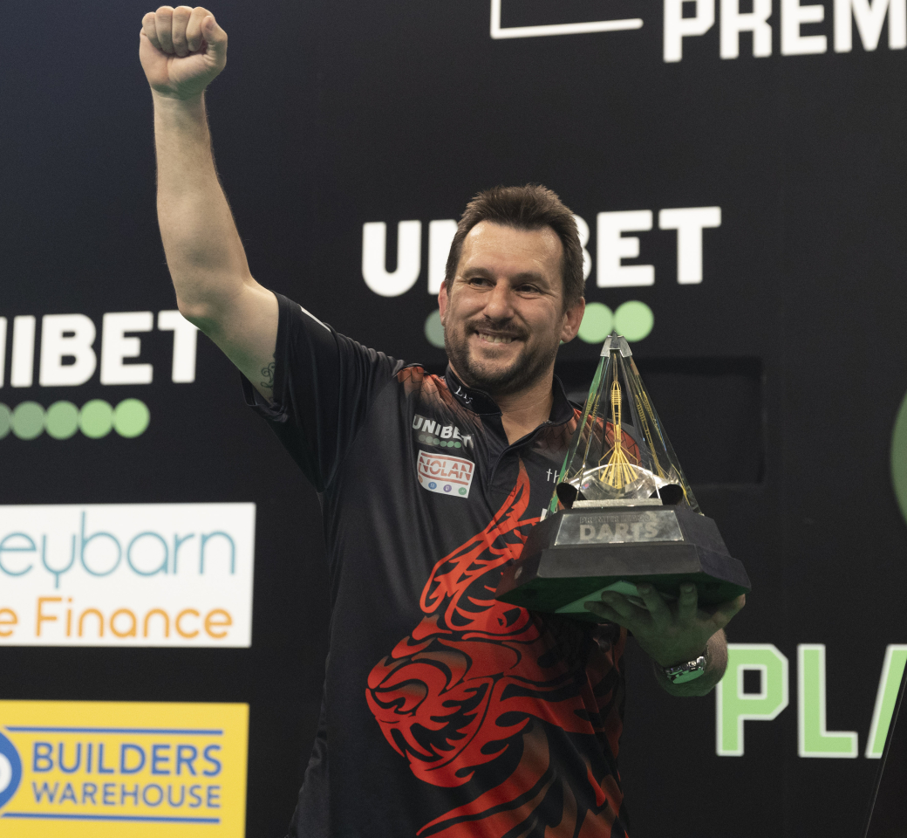

Jonny Clayton
Nickname
The Ferret
Home Town
Pontyberem
Walk-on song
Johnny B. Goode - Chuck Berry
Darts Used
Red Dragon 21g
Rank
5
Televised titles
7
Non-Televised PDC titles
8
Televised Nine-Dart Finishes
2
Clayton’s World Cup success alongside Gerwyn Price in 2020 sparked an incredible rise to stardom for the affable Welshman.